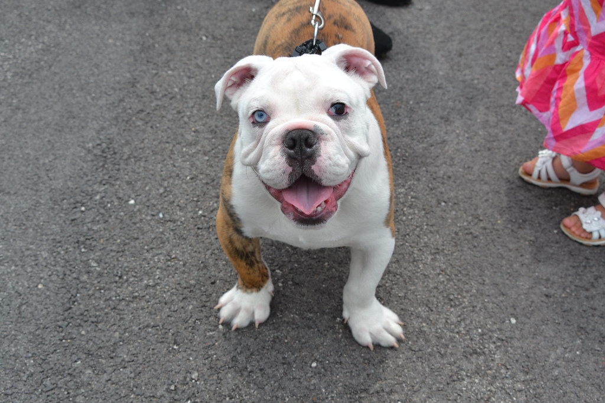

Welcome!!!
Welcome to the Bulldog Archive, a website dedicated to providing information about one of the most adorable, laziest, craziest breeds of dogs: The Bulldog. Oftentimes confused with pugs, the Bulldog is famous for its wrinkles and chubby body. This website aims to inform about the bulldog, the issues the breed faces, and some awesome bulldogs who have taken the hearts of social media.